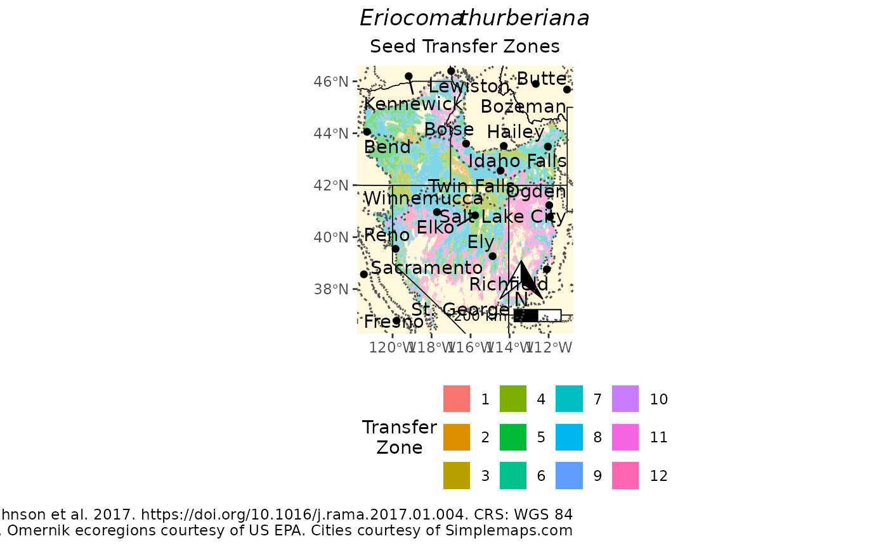

Create a full page PDF map for distributing with the eSTZ for quick refernce by users.
The function will also return the map as a ggplot object if you want to make further modifications to it.
These maps are intended for being seen in a large format size, and may not be suitable for including in a manuscript or publication, outsize the appendeix or online references.
If you like components of the map, and want to try and make them for a smaller format, you can rip out the source code and go from there; don't worry this map is very simple so there isn't much to figure out there.
You can visualize source code by typing either: mapmakR (without a function argument) into the R console, or in a more intuitive format on Github at: https://github.com/sagesteppe/eSTZwritR/blob/main/R/mapmakR.R .
Usage
mapmakR(
x,
sci_name,
save = TRUE,
outpath,
ecoregions = TRUE,
cities = TRUE,
city_reduce = "Distance",
city_reduce_no = 20,
landscape = TRUE,
caption,
filetype = "pdf",
buf_prcnt = 0.025,
SZName = SZName
)Arguments
- x
the vector (e.g. shapefile) or raster dataset to plot, note vector data will be coerced to raster before plotting.
- sci_name
Character string, the name of the species which is being mapped.
- save
Boolean, whether to save the file or not. Defaults to TRUE.
- outpath
Character string, a directory to save the map to. Defaults to the current working directory.
- ecoregions
Boolean, whether to draw ecoregions or not. Defaults to TRUE.
- cities
Boolean, whether to draw cities or not, Defaults to TRUE.
- city_reduce
Character string. One of "Distance", "Population", defaults to 'Distance'. Maps of very large domains (get 10+ western states) feel cluttered if too many cities are added to them. If cities==TRUE and cities > city_reduce_no, then this argument utilizes a method to reduce the number of mapped cities to city_reduce_no.
Method "Distance" (the default) will sample 250 regularly spaced grid points and restrict them to the eSTZ surface, and calculate pairwise distances between all points and all cities. Only the city_reduce_no will be retained. Method "Population" will simply keep the largest city_reduce_no cities. It may be a better alternative for showing the map to people from more distal geographic regions.
- city_reduce_no
Numeric. Max number of cities to to include on map, defaults to 20.
- landscape
Boolean, whether to draw the map in a landscape orientation or not. Defaults to TRUE
- caption
Character string, text for a caption. It's best to mention any published product related to the data set. Defaults to omitting any caption, except for the data sources (if omernik and cities are used), and coordinate reference system information.
- filetype
Character string, defaults to 'pdf' for saving a pdf page for distribution with data,
- buf_prcnt
The amount to buffer the extent around the focal taxons range by. Defaults to 0.025 oor 2.5% but 'png' (or any other format supported by ?ggsave) can be used to create a map for embedding in a publication or poster.
- SZName
Character. The field containing the seed zone, defaults to 'SZName'.
Value
Writes a PDF (or other specified filetype) to disk, and returns the ggplot object to console allowing user to modify it for other purposes.
Examples
library(eSTZwritR)
acth7 <- sf::st_read(file.path(
system.file(package="eSTZwritR"), "extdata", 'ACTH7.gpkg')
)
#> Reading layer `ACTH7' from data source
#> `/home/runner/work/_temp/Library/eSTZwritR/extdata/ACTH7.gpkg'
#> using driver `GPKG'
#> Simple feature collection with 4967 features and 4 fields
#> Geometry type: MULTIPOLYGON
#> Dimension: XY
#> Bounding box: xmin: -121.5447 ymin: 36.53208 xmax: -111.0114 ymax: 46.35708
#> Geodetic CRS: WGS 84
p <- mapmakR(acth7,
sci_name = 'Eriocoma thurberiana',
save = FALSE,
landscape = FALSE,
ecoregions = TRUE,
cities = TRUE,
SZName = zone,
caption = 'Data from Johnson et al. 2017. https://doi.org/10.1016/j.rama.2017.01.004'
)
plot(p)
#> Warning: st_point_on_surface may not give correct results for longitude/latitude data
#> Scale on map varies by more than 10%, scale bar may be inaccurate
